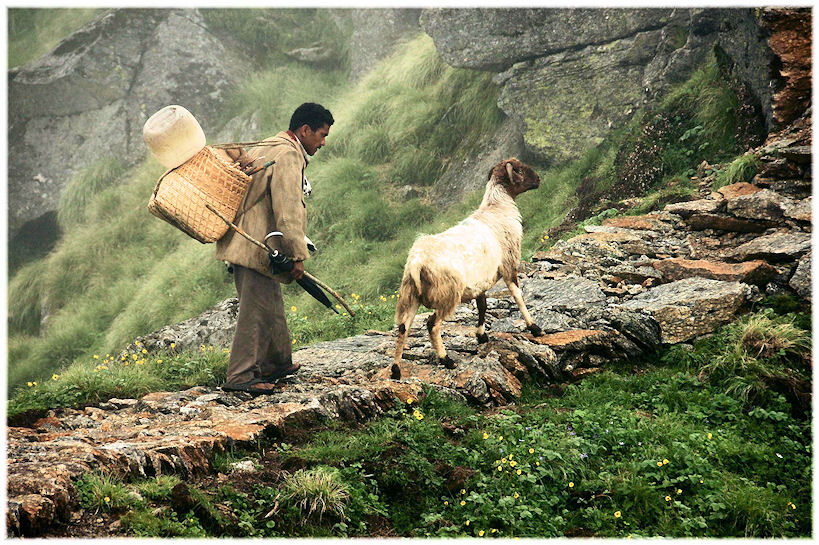
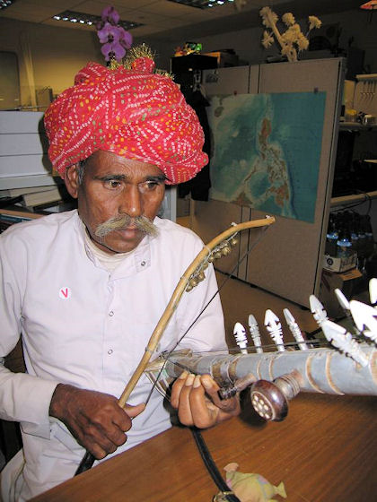

mailto:payer@payer.de
Zitierweise | cite as:
Payer, Alois <1944 - >: Sanskritkurs. -- Lösung der Übungen. -- Übungen Lektion 26 - 30. -- Fassung vom 2008-12-30. -- URL: http://www.payer.de/sanskritkurs/uebung21.htm
Erstmals hier publiziert: 2008-12-30
Überarbeitungen:
Anlass: Lehrveranstaltungen 1980 - 1984
©opyright: Dieser Text steht der Allgemeinheit zur Verfügung. Eine Verwertung in Publikationen, die über übliche Zitate hinausgeht, bedarf der ausdrücklichen Genehmigung des Verfassers
Dieser Text ist Teil der Abteilung Sanskrit von Tüpfli's Global Village Library
Falls Sie die diakritischen Zeichen nicht dargestellt bekommen, installieren Sie eine Schrift mit Diakritika wie z.B. Tahoma.
Die Devanāgarī-Zeichen sind in Unicode kodiert. Sie benötigen also eine Unicode-Devanāgarī-Schrift.
B) Mit Bindevokal -i-:

Abb.: अविपालो ऽविं
रक्षति (अवि m. Schaf)
Uttarakhand = उत्तराखण्ड
[Bildquelle: aRfi!. --
http://www.flickr.com/photos/zutshy/2639124622/. -- Zugriff am 2008-12-29.
--


 Creative
Commons Lizenz (Namensnennung, keine kommerzielle Nutzung, keine Bearbeitung)]
Creative
Commons Lizenz (Namensnennung, keine kommerzielle Nutzung, keine Bearbeitung)]
A) Setzen Sie im folgenden Satz die Ausdrücke in der Klammer im Lokativ (सप्तमी) Singular und - wo es sinnvoll ist - Plural ein. Beachten Sie den verschiedenen Sandhi, d.h. schreiben Sie jedsesmal den vollen Satz aus!
रामस् ... वसति । (ग्राम । गुरु । सत्यवान्कविः । पुत्रं लब्धुकामा ब्राह्मणी । गृह । तन्नगरम् । मुह्यञ्छत्रुः)
रामो ग्रामे वसति ।
रामो गुरौ वसत् । रामो गुरुषु वसति ।
रामः सत्यवति कवौ वसति । रामः सत्यत्सु कविषु वसति ।
रामः पुत्रं लब्धुकामायां ब्राह्मअण्यां वसति । रामः पुत्रं लब्धुकामासु ब्राह्मणीषु वसति ।
रामो गृहे वसति । रामो गृहेषु वसति ।
रामस्तस्मिन्नगरे वसति ।
रामो मुह्यति शत्रौ वसति । रामो मुह्यत्सु शत्रुषु वसति ॥
B) Übersetzen Sie und lösen Sie die Komposita auf:
धर्मं वदति गुरौ दुर्जना न शृण्वन्ति ॥१॥ Böse Leute hören nicht zu, wenn der Lehrer spricht.
बुद्धकाले नरैरार्यसत्यानि श्रोतुं शक्यन्ते ॥२॥ बुद्धस्य काले । Zur Zeit eines Buddha können die Menschen die edlen Wahrheiten hören.
वसितसुवस्त्रां नरा लुभ्यन्ति । एवं सति सत्यो नरेभ्यः सुवस्त्राणीच्छन्ति ॥३॥ वसितानि शोभनानि वस्त्राणि यया ताम् । शोभनानि वस्त्राणि । Männer lieben eine Frau, die sich schön gekleidet hat. Deswegen wünschen sich gute Frauen von den Männern schöne Kleider.
पुत्रे मृते ऽपुत्रा ब्राह्मणी पुत्रं लब्धुं व्रतं करोति ॥४॥ पुत्रो नास्ति यास्याः सा । Nachdem ihr Sohn gestorben ist macht die sohnlose Brahmanin ein Gelübde, um einen Sohn zu bekommen.
उपनीतबालैर्गुरुकुल उष्यते ॥५॥ उपनीतैर्बालैः । गुरोः कुले । Nach der Initiation wohnen die Knaben in der Familie des Meisters.
यज्ञकाले विगते ऽनिष्टदेवा विस्मृतयज्ञब्राह्मणेभ्यः क्रुध्यन्ति ॥६॥ यज्ञस्य काले । नेष्टा देवाः । विस्मृतो यज्ञो यैस्तेभ्यो ब्राह्मएभ्यः । Da der Zeitpunkt für das Opfer verstrichen ist, sind die Götter, denen nicht geopfert wurde, auf die Brahmanen zornig, die das Opfer vergessen hatten.
गुरौ तिष्ठति बाल आसितुं नार्हति ॥७॥ Während der Meister steht darf ein Knabe nicht sitzen.
एवं काले गच्छति स्वाचारक्षत्रिय इष्टं धनं न लभते ॥८॥ साधुराचारो यस्य स क्षत्रियः । Während die Zeit so vergeht, erhält der Kṣatriya mit guter Lebensart nicht den gewünschten Wohlstand.
ब्राह्मण्यां महाकवावागच्छन्त्यां ब्राह्मणीपुत्रो ऽप्यागच्छति ॥९॥ महति कवौ । ब्राह्मण्याः पुत्रः । Währen die Brahmanin beim großen Dichter ankommt, kommt auch ihr Sohn.
गुरुषूपदिशत्सु सुनीतबाला वक्तुं नार्हन्ति ॥१०॥ सुष्ठु नीता बालाः । Wenn die Lehrer sprechen, dürfen wohlerzogene Kinder nicht schwätzen.
Abb.: गुरुषूपदिशत्सु सुनीतबाला वक्तुं नार्हन्ति
Uttarakhand =
उत्तराखण्ड
[Bildquelle: Peter Davis. --
http://www.flickr.com/photos/pediddle/327799554/. -- Zugriff am 2008-12-29.
--


 Creative
Commons Lizenz (Namensnennung, keine kommerzielle Nutzung, keine Bearbeitung)]
Creative
Commons Lizenz (Namensnennung, keine kommerzielle Nutzung, keine Bearbeitung)]
A) Bilden Sie das Kausativum zu folgenden Verbformen und Partizipialformen und geben Sie die Bedeutung an:
1. Mit hochstufiger Wurzel:
2. Mit dehnstufiger Wurzel:
3. Kausativ auf -पय
4. Beachten und lernen Sie besonders folgende Kausativbildungen
B. Übersetzen Sie folgende Sätze, lösen Sie die Komposita in Sanskrit auf und bilden Sie mittels der einfachen Verben Sätze, die ausdrücken, was geschieht, wenn das durch das Kausativum ausgedrückte bewirkt wird:
Beispiel: रामो दासं भारं हारयति » दासो भारं हरति
शत्रुजयाय क्षत्रियो ब्राह्मणेन हरिहरं याजयित्वारीन्योत्स्यते ॥१॥ शत्रूणां जयाय । हरिं च हरं च । Der Kṣatriya hat, um die Feinde zu besiegen, einen Brahmanen Hari und Hara mit einem Opfer verehren lassen und wird die Feinde bekämpfen. ब्राह्मणि हरहरिं यजति ।
गुरुर्बालान्वेदमध्याप्य गृहं गतः ॥२॥ Der Lehrer hat den Knaben den Veda gelehrt und ist dann nach Hause gegangen. बाला वेदमधीयते ।
गर्भगृहे देवीप्रतिमा दर्श्यते ॥३॥ Im innersten Heiligtum wird das Bildnis der Göttin gezeigt. देवीप्रतिमा दृश्यते ।
यजन्नग्निनान्नमादयति पानं च पाययति ॥४॥ Der Opfernde gibt dem Feuer Speise zu essen und Trank zu trinken. अग्निरन्नमत्ति पानं च पिबति ।
पुत्रे जाते ब्राह्मणी दासं ब्राह्मनं गमयति । ब्राह्मणस्तं दासं गृहं प्रवेश्य पुत्रं पृच्छति । सुभगः पुत्र इति दासो वक्ति । तच्छ्रुत्वा ब्राह्मणो सुखतां गच्छति ॥५॥ शोभनो भगो यस्य सः । Sobald der Sohn geboren ist, schickt die Brahmanin einen Diener zum Brahmanen. Der Brahmane lässt den Diener ins Haus kommen und fragt nach seinem Sohn. Der Diener sagt, dass der Sohn wohlauf ist. Als er das hört wird der Brahmane glücklich. दासो ब्राह्मणं गच्छति । दासो गृहं प्रविशति ।
स्तुवता नरेण देवा महाकवेः स्तोत्राणि श्राविताः ॥६॥ मह्तेः कवेः । Der lobsingende Mann bringt den Göttern die Lobeshymnen des großen Dichters zu Gehör. देवा महाकवेः स्तोत्राणि शृण्वन्ति ।
आर्ययोधैर्महायुद्धे ऽरयो मार्यन्ते ॥७॥ आर्यैर्योधैः । महति युद्धे । Die edlen Krieger töten in der großen Schlacht die Feinde. अरयो म्रियन्ते ।
सत्क्षत्रिया ब्राह्मणेनेष्टदेवतापूजां कारयति । स ब्राह्मणः पूजां कृत्वा क्षत्रियाया धनमेषिष्यति ॥८॥ सती क्त्रिया । इष्टाया देवतायाः पूजां । Die gute Kṣatriyā lässt einen Brahmanen ihre persönliche Gottheit verehren. Wenn er die Verehrungszeremonie vollzogen hat, wird der Brahmanin von der Kṣatriyā Geld wünschen. ब्राह्मण इष्टदेवतापूजां करोति ।
धनं जेतुं महाक्षत्रियो योधव्याघ्रैर्व्रतानि चारयिष्यति ॥९॥ महान्क्षत्रियः । व्याघ्रैरिव योधैः । Um Reichtümer zu erobern, wird der große Kṣatriya die tigergleichen Kämpfer Gelübde halten lassen. योधव्याघ्रा व्रतानि चरिष्यन्ति ।
पापाद्मोक्षार्थेन सुगत आर्यजनानार्यसत्यानि बोधयति ॥१०॥ मोक्षस्यार्थेन । सूष्टु गतः । आर्यान्जनान् । आर्याणि सत्यानि । Um sie vom Übel zu befreien, lässt Buddha edle Menschen die edlen Wahrheiten erkennen. आर्यजना आर्यसत्यानि बुध्यन्ते ।
Abb.: गर्भगृहे देवीप्रतिमा दर्श्यते
Birla Mandir Jaipur = बिर्ला मन्दिर, जयपुर
[Bildquelle: digitaura. --
http://www.flickr.com/photos/digitaura/262342685/. -- Zugriff am 2008-12-29.
--


 Creative
Commons Lizenz (Namensnennung, keine kommerzielle Nutzung, keine Bearbeitung)]
Creative
Commons Lizenz (Namensnennung, keine kommerzielle Nutzung, keine Bearbeitung)]
Übersetzen Sie wortgetreu in gutes Deutsch und lernen Sie die Sanskrittexte auswendig:
1. Definition von अविद्या :
अनित्याशुचिदुःखानात्मसु नित्यशुचिसुखात्मख्यातिरविद्या ॥योगसूत्र २.५॥
Erklärung: आत्मसु = Lok. sg. zu आत्मन् m. "Seele ; das Absolute, insofern es im Individuum verwirklicht wird"
Unwissen bedeutet, dass man Unbeständiges, Unreines, Leidvolles und Nicht-Absolutes als beständig, rein, freudvoll bzw. absolut ansieht.
2. कौटिलीयार्थशास्त्र 1.4. über den rechten Gebrauch des दण्ड :
तीक्ष्णदण्डो भूतानामुद्वेजनीयो भवति ।८। मृदुदण्डः परिभूयते ।९। यथार्हदण्डः पूज्यते ।१०। सुविज्ञातप्रणीतो हि दण्डः प्रजा धर्मार्थकामैर्योजयति ।११। दुष्प्रणीतः कामक्रोधाभ्यामवज्ञानाद्वा वानप्रस्थपरिव्राजकानपि कोपयति, किमङ्ग पुनर्गृहस्थान् ।१२। अप्रणीतस्तु मात्स्यन्यायमुद्भावयति ।१३। बलीयानबलं हि ग्रसते दण्डधराभावे ।१४। स तेन गुप्तः प्रभवतीति ।१५।
चतुर्वर्णाश्रमो लोको
राज्ञा दण्डेन पालितः ।
स्वधर्मकर्माभिरतो
वर्तते स्वेषु वर्त्मसु ॥१६॥
Vor einem zu strengen Regiment müssen die Wesen schaudern. Ein lasches Regiment wird verachtet. Ein gerade richtiges Regiment wird verehrt. Ein weise geführtes Regiment fördert bei den Untertanen Recht, Gewinn und Lust. Ein wegen Lust und Hass oder Verachtung schlecht geführtes Regiment erzürnt selbst in den Wald zurückgezogene Alte und Wandersasketen, um wieviel mehr Hausväter. Nicht ausgeübtes Regiment bewirkt ein Verhalten wie Fische. Wenn niemand da ist, der das Regiment aufrecht erhält, verschlingt nämlich der Stärkere den Schwachen. Wenn der Schwache vom Regimentsinhaber behütet wird, gedeiht er.
Die Welt mit ihren vier Ständen und Lebensstadien
Wird vom König durch das Regiment beschützt:
Froh über die Tätigkeit nach eigenem Recht und eigener Sitte
Bewegt sie sich auf ihren eigenen Bahnen.
Erklärungen:
।८। उद्वेजनीय ३ "etwas (jemand), vor dem man schaudern muss"
।११। विज्ञात ३ "erkannt" ; n.: Erkennen
।११। योजयति (Kaus. zu युज्) "anschirren, verbinden mit, vereinigen mit"
।१२। कामक्रोधाभ्याम् : Instr., Dat. Abl., Dual mask. von कामक्रोध (Dualdvandva)
।१२। किमङ्ग "um wieviel mehr"
।१४। बलीयान् : Nom. sg. mask. zu बलीयस् ३ "stärker"
।१६। चतुर् "vier" als Vorderglied eines Kompositums
राज्ञा Instr. sg. mask. zu राजन् m. "König"
स्वेषु : Lok. plur. mask. / neutr. zu स्व ३ "eigen (mein, dein, sein usw.)"
वर्त्मसु : Lok. plur neutr. zu वर्त्मन् n. "Bahn, Gleis, Pfad"
Abb.: चतुर्वर्णाश्रमो
लोको
राज्ञा दण्डेन पालितः ।
स्वधर्मकर्माभिरतो
वर्तते स्वेषु वर्त्मसु ॥१६॥
Dr. Raman Singh = ड. रमण सिंग, seit 2003
Chief Minister (मुख्यमंत्री) von Chhatisgarh छत्तीसगढ़ =
छत्तीसगढ़
[Bildquelle: Amita Sharma. --
http://www.flickr.com/photos/hindibhasha/2593298459/in/set-72157605709733141/.
-- Zugriff am 2008-12-29. --
 Creative
Commons Lizenz (Namensnennung)]
Creative
Commons Lizenz (Namensnennung)]
A) Wandeln Sie folgende Verbalformen in die in Person, Zahl und Genus verbi entsprechende Optativformen um:
B) Überrsetzen Sie die folgenden Sätze und lösen Sie die Komposita auf Sanskrit auf:
जना आर्यसत्यानि जानीयुरिति सुगतेनार्याणां सुखाय जना धर्मं ज्ञाप्यन्ते ॥१॥ आर्याणि सत्यानि । Buddha hat den Menschen zum Heil der Edlen seine Lehre verkündet, damit sie die edlen Wahrheiten erkennen.
ये नरा देवान्न यजेरन्व्रतानि च न चरेयुरनृतं च वदेयुरधर्मं च कुर्युस्ते स्सुखं नाप्नुयुर्मृत्वा च नरकं पतेयुः ॥२॥ Menschen, der den Göttern nicht opfern, keine Gelübde halten, lügen und Unrecht tun, die werden nicht glücklich und fallen nach ihrem Tod in eine Hölle.
ज्ञातिरागच्छेतितीष्ट्वार्यपुत्रो ज्ञातिं दासमाययति ॥३॥ आर्यः पुत्रः । आर्याणां पुत्रः । Der edle Sohn will, dass seine Verwandten kommen, und lässt einen Diener die Verwandten holen.
अन्नलोभाद्दुःखं जायेतेति प्राप्तज्ञानः सुफलानि नाश्नाति ॥४॥ अन्नस्य लोभात् । प्राप्तं ज्ञानं येन स । Zur Einsicht gelangt, dass aus Fressgier Leid entsteht, isst er die guten Früchte nicht,
क्रयेण च विक्रयेण च वैश्या जीवेयुरिति वैश्यधर्मः । एवं सति वैश्यपुत्राः क्रीणन्ति विक्रीणते च ॥५॥ वैश्यानां पुत्राः । Pflicht der Vaiśyas ist es, von Kauf und Verkauf zu leben. Deshalb kaufen und erkaufen Vaiśyas.
कृतपापो नरश्चेन्नरके पापात्पूतः स्यात्पुनर्भवं गच्छेत् ॥६॥ कृतं पापं येन सः । पुनर्भवतीति पुनर्भवः । Wenn ein Übeltäter in einer Hölle von seiner Schlechtigkeit gereinigt ist, wird er wiedergeboren.
ब्राह्मणपुत्रा वेदाध्यायांश्च स्मृत्यध्यायांश्च पुनः पुनरधीयीरन्नित्यार्यधर्मः ॥७॥ ब्राह्मणानां पुत्राः । वेदानामध्यायांश्च स्मृतीनामध्यायांश्च । आर्याणां धर्मः । Pflicht der Edlen ist, dass Brahmanensöhne die Lehrabschnitte der Veden und der Überlieferung immer wieder studieren.
यो ब्राह्मणः शूद्रां कामयेत स सद्ब्राह्मणो न स्यात् । सद्ब्राह्मणो हि ब्राह्मणीं कामयेत ॥८॥ सन्ब्राह्मणः । Ein Brahmane der eine Śūdra liebt ist kein guter Brahmane, denn ein guter Brahmane liebt eine Brahmanin.
सत्यं ब्रूयात्प्रियं ब्रूयान्न
ब्रूयात्सत्यमप्रियम् ।
प्रियं च नानृतं ब्रूयादेष धर्मः सनातनः ॥९॥ ॥मनुस्मृति ४.१३८॥
Man sage Wahrheiten die angenehm sind,
Unangenehme Wahrheiten sage man nicht,
Nicht sage man angenehme Unwahrheiten,
Dies ist das ewige Gesetz.

Abb.: श्रीमोहनभोपेन रावणहस्तो वाद्यते
Mohan Bhopa spielt Ravanahatha, Mewar = मेवाड़
[Bildquelle: aameducation. --
http://www.flickr.com/photos/9836216@N06/933464497/. -- Zugriff am
2008-12-29. --


 Creative
Commons Lizenz (Namensnennung, keine kommerzielle Nutzung, keine Bearbeitung)]
Creative
Commons Lizenz (Namensnennung, keine kommerzielle Nutzung, keine Bearbeitung)]
Bestimmen und übersetzen Sie folgende Wortformen:
Abb.: भक्त्याः
Hare Krishna devotees perform a parade in
Florida, USA in 2008
[Bildquelle: Tim Ross / Wikipedia. Public domain]
Zu den Lösungen der Übungen Lektion 31 - 35